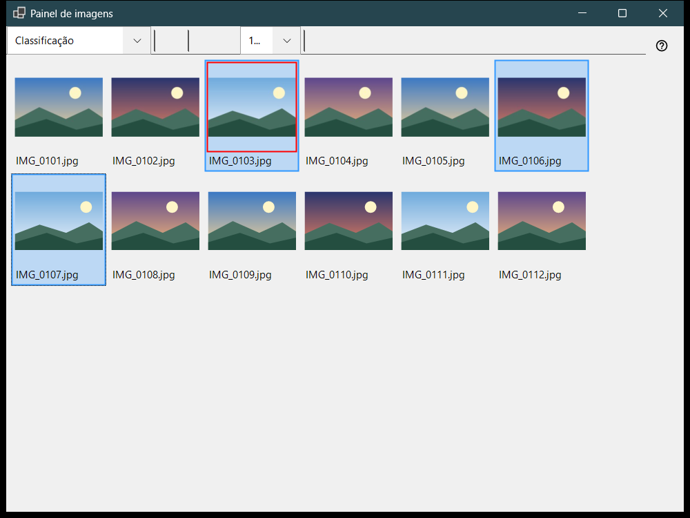
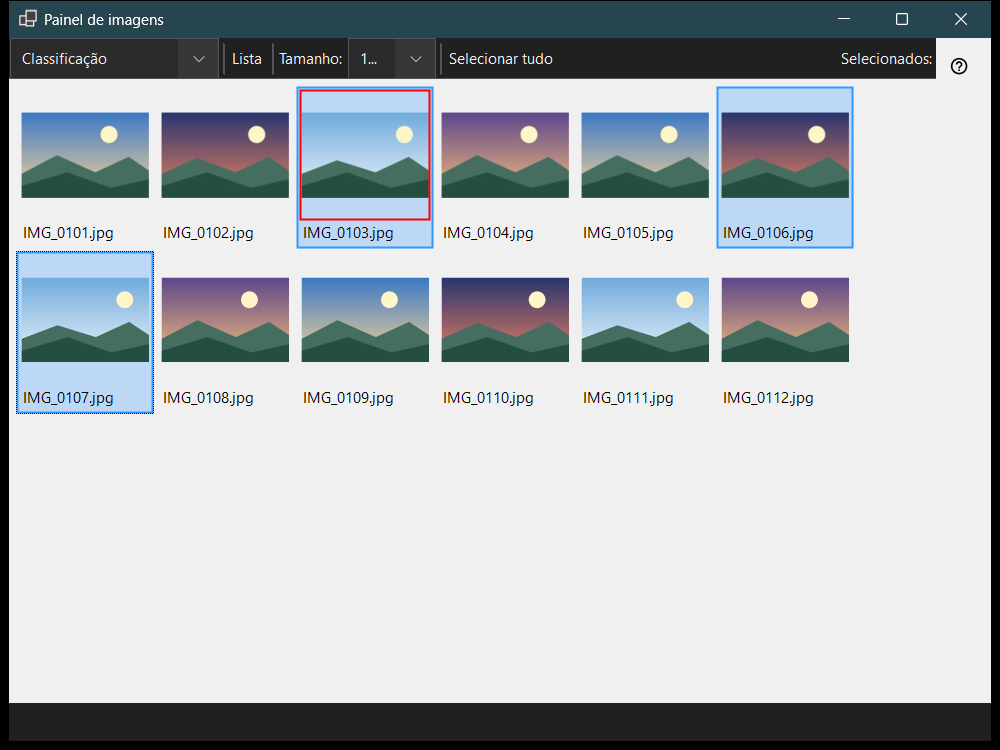

Painel de imagens
Finalidade
O painel de imagens abre com F3 no visualizador e funciona em dois modos escolhidos na caixa «Modo do painel»: Classificação, uma grade de miniaturas da pasta atual, e Gerenciador de arquivos, um navegador com locais, pastas e comandos de arquivo. Ver os arquivos, selecioná-los e fechar o painel não mudam o que a janela principal mostra.


Nesta ordem
- Pressione F3 no visualizador.
- Escolha o modo em «Modo do painel».
- Selecione arquivos: clique, Shift+clique para um intervalo, Ctrl+clique para alternar um ou arraste um quadro.
- No modo Classificação, pressione 0-9 para mover a seleção para uma pasta de destino, ou Shift com um dígito da fileira superior para copiá-la; Ctrl+Z desfaz a última operação.
- Clique duas vezes em um arquivo ou pressione Enter para abri-lo na janela principal.
- Pressione Esc para cancelar uma operação em andamento e Esc de novo para fechar o painel.
Os elementos
Modo do painel
«Modo do painel» alterna entre Classificação e Gerenciador de arquivos. O modo Classificação mostra miniaturas da pasta atual para mover e copiar rapidamente; o gerenciador de arquivos navega por qualquer pasta e oferece comandos de arquivo.
Tamanho, layout e seleção
O controle deslizante (Tamanho:) define o tamanho das miniaturas, «Blocos» e «Lista» alternam o layout (Ctrl+L), e o contador de seleção mostra quantos arquivos estão selecionados do total.
Seleção e classificação
O clique seleciona, Shift+clique seleciona um intervalo, Ctrl+clique alterna um arquivo e arrastar desenha um quadro de seleção. Ctrl+A seleciona tudo, Ctrl+Shift+A limpa a seleção, Ctrl+I a inverte, a barra de espaço marca um arquivo, e as setas, Home, End, PgUp e PgDn permitem se mover. Os dígitos 0-9 movem a seleção para a pasta de destino dessa tecla, Shift com um dígito da fileira superior a copia, Del a exclui e Ctrl+Z desfaz a última operação.
Filtro e arquivos ocultos
O filtro de conteúdo escolhe Arquivos de mídia, Mídia e documentos ou Todos os arquivos, e «Ocultos» mostra ou esconde os arquivos ocultos. «Configurações..» abre a janela Configurações na página Gerenciador de arquivos, onde se definem o modo de exibição, o filtro, os locais e a ordenação lembrada.
Comandos de arquivo
Ctrl+C, Ctrl+X e Ctrl+V copiam, recortam e colam, F2 renomeia, Ctrl+Shift+N cria uma pasta, Del e Shift+Del excluem os itens selecionados e Alt+Enter mostra as propriedades. Copiar ou mover entre recursos passa por este computador.
Criar ZIP
«Criar ZIP» empacota todas as pastas e arquivos selecionados em um único arquivo compactado. A exclusão dos originais vem desativada por padrão e só é permitida depois que o arquivo compactado for verificado e publicado.
Extrair aqui
«Extrair aqui» atua sobre um único arquivo compactado selecionado: pastas e arquivos comuns são mantidos, o arquivo compactado original permanece no lugar e os programas extraídos nunca são executados. Esc cancela a operação.